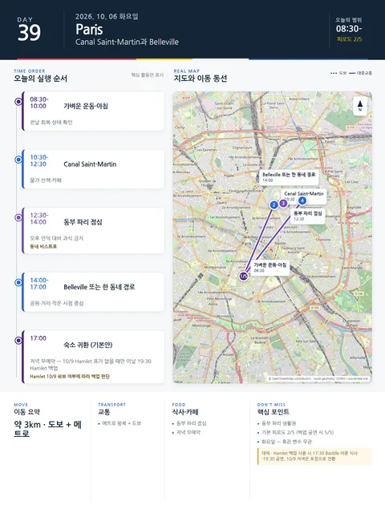

Day 39 · 10/6 화 · Paris
오늘의 주요 장소

- 핵심 실행
- Canal Saint-Martin·Belleville
- 권장 출발
- 08:30 가벼운 운동
- 완충
- 저녁 무예약
- 예약
- 이 날짜로 잡힌 예약 없음 · 현황
시간표
| 시간 | 일정 | 실행 포인트 |
|---|---|---|
| 08:30–10:00 | 가벼운 운동·아침 | 전날 회복 상태 확인 |
| 10:30–12:30 | Canal Saint-Martin | 물가 산책·카페 |
| 12:30–14:00 | 동부 파리 점심 | 오후 언덕 대비 과식 금지 |
| 14:00–17:00 | Belleville 또는 한 동네 경로 | 공원·거리·작은 서점 중심 |
| 17:00 이후 | 숙소 귀환 | 저녁 무예약 |
피로도
2/5
이 날의 메모
Canal Saint-Martin과 Belleville — 동부 파리 로컬 라이프
Hamlet 취소로 백업 분기는 폐기됐다.
상세 실행 확인
- 최고 리스크
- 언덕·보행
- 우선 삭제
- Belleville 일부
- 대체안
- 숙소 조기 귀환
- 식사·휴식
- 동부 파리 점심
- 잠금 필요
- 없음
Google 실행지도
Canal Saint-Martin과 Belleville
지도 펼치기
지도는 펼칠 때만 불러옵니다.
Daily Action Map

실제 좌표와 OpenStreetMap을 사용한 실행용 요약입니다. 도로·대중교통 상황은 출발 직전에 다시 확인하세요.